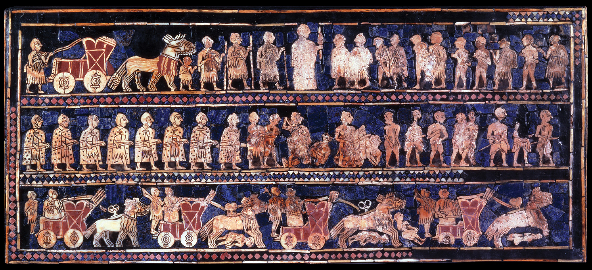

<template>
<div data-hf-id="hf-zm2a" id="s26" data-composition-id="s26" data-width="1920" data-height="1080" data-duration="6.478000000" style="position:relative;width:100%;height:100%">
<section data-hf-id="hf-t4ra" class="shot-surface photo theme-light">
<div data-hf-id="hf-xtcz" class="ground-texture" aria-hidden="true" data-layout-ignore=""></div>
<header data-hf-id="hf-g11z" class="frame-header"><span data-hf-id="hf-hjzl"><i data-hf-id="hf-rv09" class="header-dot"></i>une histoire du pouvoir</span><span data-hf-id="hf-ebcr" class="header-right">06 / 09</span></header>
<div data-hf-id="hf-hggq" class="kicker">06 — justifier le sommet</div><div data-hf-id="hf-bdx3" class="copy"><div data-hf-id="hf-5i4w" class="heading-rule" aria-hidden="true"></div><h2 data-hf-id="hf-t43f" class="headline"><span data-hf-id="hf-j8zu" class="title-line">la force ne suffit pas</span></h2></div><div data-hf-id="hf-4aao" class="photo-frame"><span data-hf-id="hf-7qec" class="image-index" aria-hidden="true" data-layout-ignore="">01</span></div><div data-hf-id="hf-1ftz" class="photo-caption">étendard d’ur · vers 2550 av. n. è. · domaine public</div>
<footer data-hf-id="hf-1dc7" class="frame-footer"><span data-hf-id="hf-ajp8">qui a inventé les rois ?</span><span data-hf-id="hf-dajr" class="footer-page">26 / 44</span></footer>
</section>
</div>
<script>window.DocRuntime.mount("s26",{"duration": 6.478000000000009, "figure": null, "camera": "push", "list": false, "cta": false});</script>
</template>